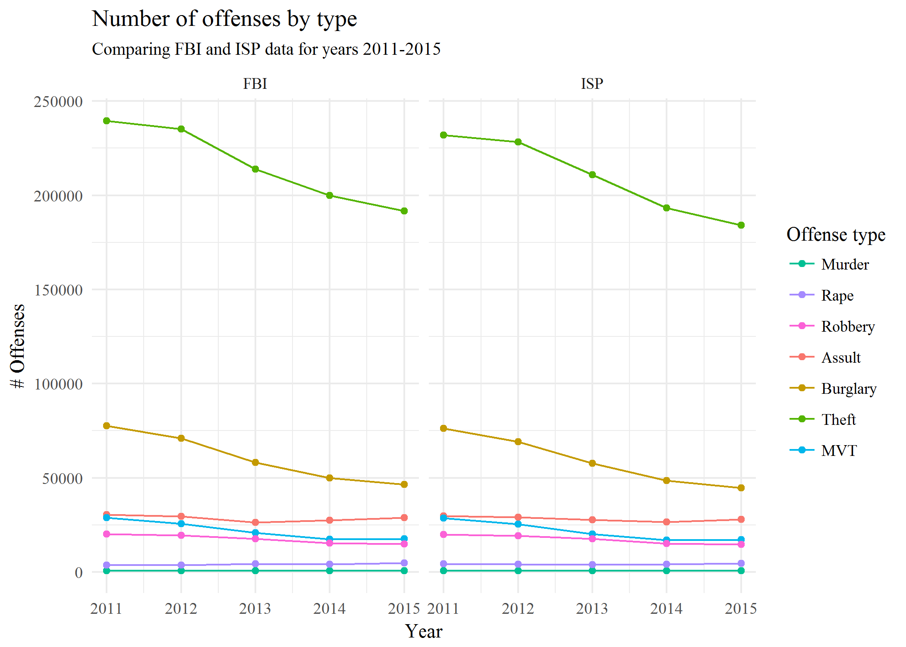
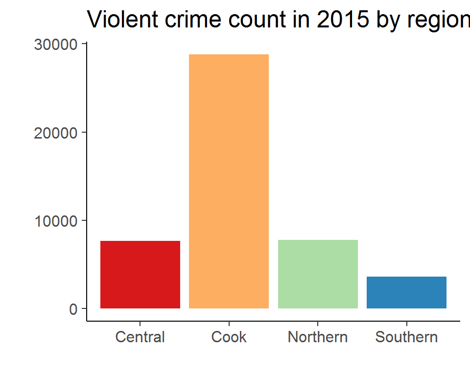

R Workshop R&A Meeting Presentation
Bobae Kang
February 13, 2018

This page contains the script for R Workshop R&A Meeting Presentation, prepared by ICJIA Research Analyst Bobae Kang for a Research and Analysis Unit monthly meeting on Feburary 13, 2018. The presentation is meant to announce and advertise the workshop series to the Unit as well as to provide a brief introduction to the workshop is about. The presentation slides are available here.
Welcome_

Welcome to this presentation. Today I would like to share with you a workshop series on R, which I have been developing to encourage and enable ICIJA researchers to incorporate R into their research and data analysis workflow.
This presentation can be roughly divided into two parts. In the first part, I will talk about what R is and demonstrate what it can do. This is the longer part of the talk. Then, I will briefly discuss the workshop objectives and structure.
Quick survey
Before we move on, let us take a quick survey:
- How many of you have heard of R before?
- How many of you have tried R before?
- How many of you use R regularly?
- (Can you briefly tell us what you use R for?)
A brief intro to R
Now let me give you a very brief introduction to R.
What is R?
“R is a language and environment for statistical computing and graphics.” - The R Foundation
Accoring to the official documentation, R is a programming language that is specifically built for data analysis and visualization. In fact, it is one of the the most popular choices of programming language among academic researchers and data scientists.
Let’s take a closer look and talk about the benefits of using R in more details.
First, R is open-source, which means free. Not only R is free, but also its supporting softwares are free. No strings attached. Being open-source also means that, if you are interested, you can look at the source code and find out exactly what each function is doing under the hood.
R is built for statistical analysis, which means that it already comes with a breadth of functionalities for data analysis and statistics. This sets R apart from other programming languages in general.
Using a programming language such as R allows researchers to conduct research in a reproducible and transparent fashion. Every step taken for data manipulation and statistical modeling is in plain sight, in the form of code, making it easy to replicate the results or collaborate with others. This also gives researchers a jump-start when starting a new, but similar project.
R can be greatly extended with powerful third-party packages, which are, or course, free of charge. The existence of numerous third-party packages is in fact one of the greatest advantages of using R that no proprietary sofewares, like SPSS, STATA, or SAS, can imitate.
With these packages, researchers can tackle a variety of tasks using a single platform, from collecting data to cleaning data to creating visualizations to fitting statistical models to generating a report, and even more.
And, perhaps most importantly, with some practice, you can create amazing stuff with R!
R is versatile
In other words, R is a powerfully versatile tool. Many who have not used R think that it is just another statistical software. That is not true at all. R is a programming language with a fast-growing ecosystem of diverse packages and applications, which enables its users to do wonders–literally.
For the next few minutes, I would like to quickly showcase what R is capable of.
Data manipulation
Here, we will see how some basic data manipulation and analysis can be done using R.
Code 1
# peak at the first rows of the data
ispcrime_tbl## # A tibble: 510 x 12
## year county violentCrime murder rape robbery aggAssault propertyCrime
## <int> <fct> <int> <int> <int> <int> <int> <int>
## 1 2011 Adams 218 0 37 15 166 1555
## 2 2011 Alexa~ 119 0 14 4 101 290
## 3 2011 Bond 6 1 0 0 5 211
## 4 2011 Boone 59 0 24 8 27 733
## 5 2011 Brown 7 0 1 0 6 38
## 6 2011 Bureau 42 0 4 3 35 505
## 7 2011 Calho~ 13 0 0 0 13 56
## 8 2011 Carro~ 8 0 1 0 7 206
## 9 2011 Cass 12 0 1 0 11 119
## 10 2011 Champ~ 1210 5 127 208 870 5332
## # ... with 500 more rows, and 4 more variables: burglary <int>,
## # larcenyTft <int>, MVTft <int>, arson <int>First, let us take a quick glance at our data. It is the State Police’s annual report of crime data for Illinois counties, from 2011 to 2015. It has total 510 rows and 12 columns. The columns include: year, county, violent crime total, four violent crime categories, property crime total, and four property crime categories. I will now show you how some questions can be answered using R code. Do not worry about understanding the code–we will learn all about it in the actual workshop.
Code 2
# get a quick summary of violent crime and property crime
ispcrime_tbl %>%
select(violentCrime, propertyCrime) %>%
summary()## violentCrime propertyCrime
## Min. : 0 Min. : 0
## 1st Qu.: 19 1st Qu.: 133
## Median : 42 Median : 349
## Mean : 501 Mean : 2913
## 3rd Qu.: 133 3rd Qu.: 1190
## Max. :33348 Max. :178902
## NA's :7 NA's :7Let’s say that we want to get some quick summary of violent crime and propety crime counts. As you can see here, getting some basic summary statistics of a selected set of columns can be done easily.
Code 3
# filter to keep only counties starting with C for 2015
# while creating and showing a new variable for total crime count
ispcrime_tbl %>%
filter(substr(county, 1, 1) == "C", year == 2015) %>%
mutate(totalCrime = violentCrime + propertyCrime) %>%
select(year, county, totalCrime)## # A tibble: 12 x 3
## year county totalCrime
## <int> <fct> <int>
## 1 2015 Calhoun NA
## 2 2015 Carroll 176
## 3 2015 Cass 154
## 4 2015 Champaign 6486
## 5 2015 Christian 292
## 6 2015 Clark 103
## 7 2015 Clay 191
## 8 2015 Clinton 423
## 9 2015 Coles 805
## 10 2015 Cook 153575
## 11 2015 Crawford 282
## 12 2015 Cumberland 42Now we want to ask a more complicated question: What are the total crime count in 2015 for counties where the name starts with letter C? This involves getting a desired subset of our data and creating a new computed column for the total crime count. No problem. By the way, notice that the code itself is intuitive enough to be informative even to non-R-users.
Now, let’s ask a slightly different question: What about counties starting with “D” for not just in 2015 but also in 2014?
# how about "D" counties in 2014 and 2015?
ispcrime_tbl %>%
filter(substr(county, 1, 1) == "D", year %in% c(2014, 2015)) %>%
mutate(totalCrime = violentCrime + propertyCrime) %>%
select(year, county, totalCrime)## # A tibble: 8 x 3
## year county totalCrime
## <int> <fct> <int>
## 1 2014 De Kalb 2218
## 2 2014 De Witt 182
## 3 2014 Douglas 116
## 4 2014 Du Page 12576
## 5 2015 De Kalb 2173
## 6 2015 De Witt 140
## 7 2015 Douglas 173
## 8 2015 Du Page 12538Well, here is the answer. Notice how similar the code looks to the previous case with only two minor changes. This shows the power of writing code for data analysis. You can take your earlier work and tweak it just a little to answer a new question.
Code 4
# get annual average crime count by county
ispcrime_tbl %>%
group_by(county) %>%
summarise(annualAvgCrime = sum(violentCrime, propertyCrime, na.rm = TRUE) / n())## # A tibble: 102 x 2
## county annualAvgCrime
## <fct> <dbl>
## 1 Adams 1724
## 2 Alexander 385
## 3 Bond 190
## 4 Boone 426
## 5 Brown 39.0
## 6 Bureau 480
## 7 Calhoun 13.8
## 8 Carroll 196
## 9 Cass 109
## 10 Champaign 6567
## # ... with 92 more rowsLet’s now try aggregating data. Our new question is: what is the annual average of the crime count per county? With only a few line of code, we get the answer.
Now, suppose we want to sort the result by the average count?
# sort by average crime count?
ispcrime_tbl %>%
group_by(county) %>%
summarise(annualAvgCrime = sum(violentCrime, propertyCrime, na.rm = TRUE) / n()) %>%
arrange(desc(annualAvgCrime))## # A tibble: 102 x 2
## county annualAvgCrime
## <fct> <dbl>
## 1 Cook 182818
## 2 Du Page 14316
## 3 Lake 12779
## 4 Winnebago 12275
## 5 Will 11078
## 6 St. Clair 9262
## 7 Sangamon 8876
## 8 Kane 8332
## 9 Peoria 7229
## 10 Champaign 6567
## # ... with 92 more rowsOne extra line of code can give us the answer!
Code 5
# merging regions data and count the number of rows by region
ispcrime_tbl %>%
left_join(regions) %>%
group_by(region) %>%
count()## # A tibble: 4 x 2
## # Groups: region [4]
## region n
## <fct> <int>
## 1 Central 230
## 2 Cook 5
## 3 Northern 85
## 4 Southern 190We often have to merge two separate tables into one to get the answer we want. This code block merges the State Police crime table with another table named regions, which connects each county to the corresponding region. Then we aggregate and get a frequency table on the regional level.
Here, however, we see that numbers don’t make sense. This is because there are five observations for each county in our data.
# no duplicates!
ispcrime_tbl %>%
select(county) %>%
unique() %>%
left_join(regions) %>%
group_by(region) %>%
count()## Joining, by = "county"## # A tibble: 4 x 2
## # Groups: region [4]
## region n
## <fct> <int>
## 1 Central 46
## 2 Cook 1
## 3 Northern 17
## 4 Southern 38Simply by adding couple extra commands to our original code, we get the answer we want.
As we have seen, R provides a simple yet powerful grammer for data analysis with an added benefit of reuseable code. We can do all these data manipulation for very large data sets with little delay.
This is only a tip of an iceberg, and we will learn more in the workshop about using our data to answer more complicated questions.
Data visualization
Moving on to the world of data visualization. R ecosystem provides great data visualization packages that allow us to create publication-ready plots with a few lines of code.
Examples 1: Word cloud

Source: The R Graph Gallery
First, here is a wordcloud plot generated using wordcloud package. We don’t always need to generate a wordcloud plot, but simply knowing that it is possible allows us to explore creative ways to visualize and extract insights from our data.
Example 2: Dendrogram

Source: The R Graph Gallery
Second example is a dendrogram, or a tree plot, created with dendextend package. This allows us to create a visual representation of a decision tree. Creating this takes less than 10 lines of R code.
Example 3: Network graph

This is a work of network visualization using ggnet2 package. This plot, again, takes less than 10 lines of code to create.
Example 4: Line graph

Now let me share with you a couple of my own work. This is a line plot I made a few months ago, to compare the State Police data and FBI data. This is not two different plots manually put together, but a single plot with two sets of line graphs generated at the same time with the same R code.
Example 5: Choropleth map

And here is a map I created as a practice. This was in fact my attempt to reproduce another map created in ArcGIS.
Do they it look similar to each other?
Quick demonstration
- Bar plot
- Histogram
To help you to see how generating a plot looks like in R, I prepared a couple of demonstrations, one using a bar plot and another using a histogram.
Bar plot
# bar plot of crime count in 2015 by region
barplot <- ggplot(filter(ispcrime_tbl2, year == 2015), aes(x = region, y = violentCrime, fill = region, group = region)) +
stat_summary(geom = "bar", fun.y = "sum")
barplot
This is a simple bar plot of total violent crime count by region, using ggplot2 package. Each region is represented by each bar and a color. A legend for color coding is generated on the side as a default. Looks okay, but we can improve it a little more. How about we make the words easier to read by increasing the font size? Also, let’s give it a descriptive title. Lastly, we don’t like that grey background, so let’s give it a different look.
# add title and change appearance
barplot2 <- barplot +
labs(title = "Violent crime count in 2015 by region") +
theme_classic(base_size = 15)
barplot2And viola! The plot now has a title that tells us what it is about and the font size is easiler to read. Also, the plot has a new theme and the grey background is gone. Notice that, in the code block, the previous plot, stored in an object called barplot is used to make the code more succinct and less repetitive. I think this looks fine, but let’s improve it a little more by removing redundant information. Also, let’s try different colors.
# remove the axes names and legends, and change colors
barplot2 +
labs(x = "", y = "") +
theme(legend.position = "None") +
scale_fill_brewer(palette="Spectral")
And here is the result. The names for x- and y- axes, as well as the legend, are all gone since the title is enough to convey all the information needed to understand the plot. Also, we changed the color using a predefined palette. I don’t know if this looks better, but for demonstration purposes, it’s alright.
Histogram
# histogram of burglary count by county
ggplot(ispcrime_tbl2, aes(x = burglary)) +
geom_histogram() +
facet_wrap(~ year) +
labs(x = "Burglary count", y = "# counties") +
theme_minimal()## `stat_bin()` using `bins = 30`. Pick better value with `binwidth`.
Now let’s take a look at some histograms. Earlier we saw a plot with multiple graphes. This, too, is a series of graphes, each showing the histogram of burglary count for each year. But, wait, the picture seems overly skewed. After some investigation, we learn that Cook county is an outlier that distorts our picture. How can we fix this?
# exclude Cook county data from the histogram and add colors
ggplot(filter(ispcrime_tbl2, county != "Cook"), aes(x = burglary, fill = Year)) +
geom_histogram() + facet_wrap(~ Year) +
labs(x = "Burglary count", y = "# counties") +
theme_minimal()## `stat_bin()` using `bins = 30`. Pick better value with `binwidth`.
One way to do this is simply to remove the Cook county from the data, which can be done quite easily. Since we are determined to make it look better, we also throw some colors in it. Is this better? I think so.
As we have seen in this demonstrations, R offers powerful and flexible plotting functionalities that allow us to create amazing visualizations.
Statistical modeling
As I mentioned earlier, R is a programming language for statistical analysis. As such, it offers powerful statistical modeling functionalities, which are also made easy to implement. Here I will offer a simplified example of fitting a linear regression model to data. We will delve deeper into the subject in the workshop.
Simple linear model 1
lm_fit <- lm(violentCrime ~ propertyCrime, ispcrime)
summary(lm_fit)##
## Call:
## lm(formula = violentCrime ~ propertyCrime, data = ispcrime)
##
## Residuals:
## Min 1Q Median 3Q Max
## -2239.5 -2.2 57.0 78.3 3992.9
##
## Coefficients:
## Estimate Std. Error t value Pr(>|t|)
## (Intercept) -79.768287 16.496961 -4.835 1.77e-06 ***
## propertyCrime 0.199367 0.001059 188.303 < 2e-16 ***
## ---
## Signif. codes: 0 '***' 0.001 '**' 0.01 '*' 0.05 '.' 0.1 ' ' 1
##
## Residual standard error: 363.5 on 501 degrees of freedom
## (7 observations deleted due to missingness)
## Multiple R-squared: 0.9861, Adjusted R-squared: 0.986
## F-statistic: 3.546e+04 on 1 and 501 DF, p-value: < 2.2e-16We use the State Police crime data we have seen earlier. In this simple example, we fit a simple linear regression, using the property crime count as the explanatory variable and the violent crime count as the response variable. It takes a single line of code to fit a model and another line to print the result, which gives us useful information about the fitted coefficients and goodness-of-fit measures.
Simple linear model 2
# put model fit results in a data frame format
tidy(lm_fit)## term estimate std.error statistic p.value
## 1 (Intercept) -79.7682868 16.49696109 -4.835332 1.771126e-06
## 2 propertyCrime 0.1993675 0.00105876 188.302852 0.000000e+00It is also possible to put the model fit results into a tabular data object, which can be easily manipulated or visualized as needed.
Simple linear model 3
# get predictions and residuals for each data point
ispcrime %>%
select(year, county, propertyCrime, violentCrime) %>%
add_predictions(lm_fit) %>%
add_residuals(lm_fit) %>%
head()## year county propertyCrime violentCrime pred resid
## 1 2011 Adams 1555 218 230.24816 -12.248156
## 2 2011 Alexander 290 119 -21.95172 140.951715
## 3 2011 Bond 211 6 -37.70175 43.701747
## 4 2011 Boone 733 59 66.36808 -7.368081
## 5 2011 Brown 38 7 -72.19232 79.192322
## 6 2011 Bureau 505 42 20.91229 21.087706Here we see that the predicted values and residuals can be readily added to the original table.
Simple linear model 4
# plot the model fit
plot(violentCrime ~ propertyCrime, ispcrime)
abline(lm_fit)
We can visualize the model fit with simple code.
Simple linear model 5
# show diagnostic plots
par(mfrow=c(2, 2))
plot(lm_fit)And take a look at the diagnostic plots. (This command generates a Residuals versus fitted values plot, a Q-Q plot, a scale-location plot, and a plot of residuals versus leverage plot with Cook’s distance lines.)
Of course, using thrid-party packages, it is also possible to generate a more aesthetically pleasing plots for model fits.
Generalized linear model
# examples of generalized linear models with glm()
logistic_reg <- glm(binary_y ~ x1 + x2, data = mydata, family = binomial())
poisson_reg <- glm(count_y ~ x1 + x2, data = mydata, family = poisson())
gamma_reg <- glm(y ~ x1 + x2, data = mydata, family = Gamma())As a default, R offers generalized linear models as well, including logistic regression for binary response variable, poisson model for count data, and gamma regression to fit a wide range of shapes.
Other advanced models
And, with extra packages, R can fit a variety of other advanced models. Here are some examples:
- time series models (e.g.
statsandforecastpackages) - spatial regression models (e.g.
spdepandspgwrpackages) - survival analysis (e.g.
survivalpackage) - network analysis (e.g.
networkandigraphpackages) - text analysis (e.g.
tmandtidytextpackages) - machine learning (e.g.
caretandmlrpackages)
We see that advanced modeling involves many different packages. This may look daunting at first, but this actually offers us some freedom of choice in terms of which package to use to tackle the problem at hand. If there is no tool suited for our problem, we can even create a function or package. In fact, this is how R grows in its versatility, i.e., through packages developed by its users for specific tasks.
And more!
Researchers can do much more than just data work with R. In fact, R can serve as a research platform that provides a smooth workflow, from collecting data to publishing the analysis in various formats.
Reports
First of all, R offers its own markdown format, called RMarkdown, which can be used to generate documents in HTML, PDF and Microsoft Word formats. If the output is an HTML page, we can add some interactive elements using htmlwidgets and shiny packages. RMarkdown allows us not only to add some nice formatting to our document, but also to incorporate R code as well as its outputs into the document.
Example - R Notebook

This example is actually from my own work for the Firearm Recidivism Study. I created it as a quick report to share my analysis with Chris. This one is me examining the original arrests in 2003 for the firearm study. As you see, the report includes R code and its inputs, making each step in the process highly transparent while incorporting them into a larger narrative.
Slideshow

R offers tools to create a nice-looking slideshow. The slides for this very presentation are generated using what is called RPresentation.
Dashboard

With shiny package, we can also create a web application that can serve as an interactive dashboard.
In fact, let me take you to the dashboard for a minute. While Tableau offers a more user-friendly interface for creating a highly functional dashboard, it can also be done using R, and since R and Shiny are all open source, it costs nothing. In addition, if we need our dashboard to run complex computations or model-fitting and do more than a simple slicing-and-dicing of our data, R may be better suited for such a project.
Website

Since we can generate HTML pages with R, it should be no surprise that we can create a website using R. In fact, I have created a website for this workshop series as well. The website will have all the workshop materials so that anyone can review or preview those materials at any time and place.
Objectives
We are finally in the second part of this presentation where we can talk about the objectives and structure of this workshop series–very briefly.
This workshop series has technical objectives concerning developing practical skills and fundamantal objectives that are more about building the foundation for incorporating R programming into research.
Technical objectives
On the techincal level, the workshop series seeks to equip ICJIA researchers with skills and knowledge to do the following tasks using R:
- Import and manipulate tabular data files;
- Create simple data visualizations to extract insight from data;
- Perform basic statistical analysis;
- Generate a report on a simple data analysis task
These skills should allow anyone to get started with R for easy- to intermediate-level data analysis and reseasrch tasks.
Fundamental objectives
Now, on the more fundamantal level, I hope this workshop will help the participants to do the following:
- Understand the basic elements of the R programming language;
- This, by the way, is a great introduction to programming in general since R shares with other programming languages some fundamental elements.
- Employ the programmatic approach to research and data analysis projects;
- I will talk more about this in the first workshop session, but basically, I believe that the benefits of taking a programmtic approach to research outweighs the initial pain of learning and implementing it.
- Leverage online resources to find solutions to specific questions on using R for a given task.
- This is a critical skill since, while we cannot learn answers to all questions, we can almost always find them out there. R ecosystem is still growing, but it has matured enough to provide most functionalities for common tasks.
With such fundamentals, after going through the workshop series, a participant will be able to find right tools for the given task as well as ways to use them properly. This workshop is not pretending to teach its participants everything about R, but it will certainly teach them how to fish.
Structure
Finally, let me give you an overview of how the workshop is structured.
Overall setup
The workshop series consists of six sessions, or modules, each of which focusing on a specific topic. I will explain what the modules are about in a minute.
The workshop group can meet once a week for six weeks, each week working on one module. Each module has two parts, excpet, maybe, for the first module that serves as an introduction. All workshop materials, such as slides and notes, will be available on the webpage I showed earlier. Of course, I will be available, too, for answering questions if there are any.
Modules
Now let me quickly walk you thorugh the modules.
1. Introduction to R
Here, I will introduce the R language as well as the programmatic approach to research. I will make a case for the programmatic approach and using R to support that. I will also talk about installing R and RStudio.
2. R basics
Here, I will discuss the basic building blocks of R language. I will also introduce the popular tidyverse framework and offer some recommendations as to a “good” style for coding in R.
3. Data analysis in R
I believe this is one of the most helpful modules, focusing on manimuplating and transforming tabular data using R. We will learn how to import data into R environment and use common tidyverse syntax to clean and analyze data.
4. Data visualization in R
Here, we will get started with generating plots to visually present and communicate insights from data.
5. Statistical modeling in R
This module focuses on how to conduct basic statistical analysis with R.
Questions?
That was the end of the presentation. Do you have any questions?
Thank you so much for paying attention to my presentation!